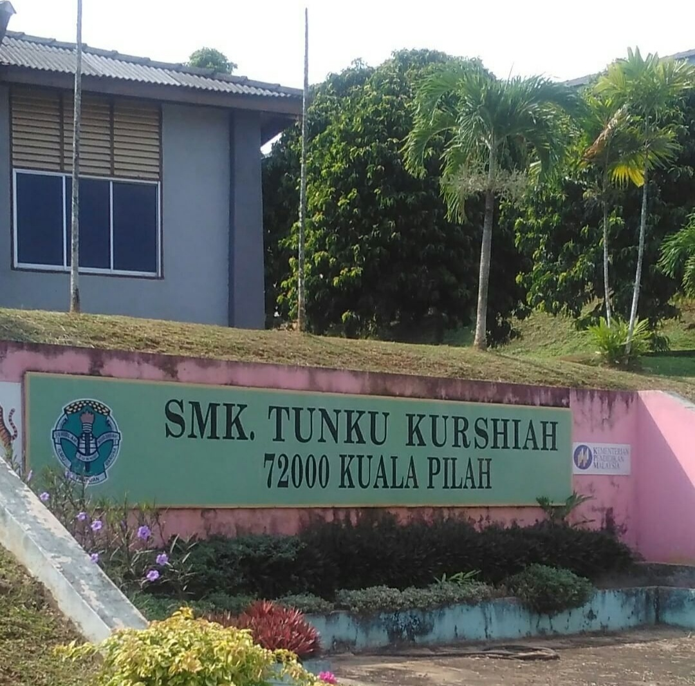

My Education Journey
In 2007, i was studying at SK Ampang Tinggi, Kuala Pilah , Negeri Sembilan until 2012. So, here some photos of my primary school.The Ampang Tinggi National School, or the short name of SK Ampang Tinggi, is a national school located at Batu 22, Jalan Seremban Lama. In 2009, Ampang High School had 203 boys and 188 girls, making a total of 391 students. It has 31 teachers.

After that, in 2011 until 2017, my secondary school is SMK Tunku Kurshiah.Tunku Kurshiah National Secondary School, or simply SMK Tunku Kurshiah, is a National Secondary School located at Km 2, Jln Tampin. It is better known as the TKS (Tunku Kurshiah School) among the residents of Kuala Pilah. Students in TKS are made up of female students only. This school is among the best in Negeri Sembilan. It has excellent female students in various fields.
Lastly, now i am studying in UiTM Merbok, Sungai Petani,Kedah. I am taking Diploma Pengurusan Perpustakaan . Now, in 2020 i am currently semester 4 which is last semester for me! I hope this semester will be better than previous semester. God Willing :')